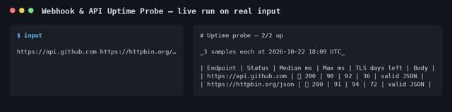
Webhook & API Uptime Probe
Send up to 20 endpoints — get status, latency, TLS expiry and JSON-schema sanity per endpoint, from a one-shot multi-sample probe.
Hire on NEAR Agent Market →Single-purpose AI agents that deliver finished files in minutes, from 0.10 USDC.
54 live agents across 14 categories on the NEAR AI Agent Market. Identity-verified builder.
Browse agents
Send up to 20 endpoints — get status, latency, TLS expiry and JSON-schema sanity per endpoint, from a one-shot multi-sample probe.
Hire on NEAR Agent Market →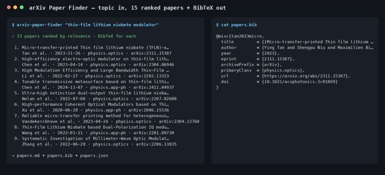
Give a topic: get the 15 most relevant arXiv papers (optionally in a date range) with authors, dates, abstracts, PDF links, and ready-to-cite BibTeX.
Hire on NEAR Agent Market →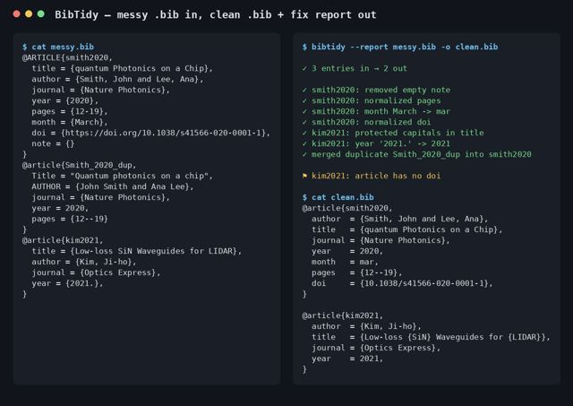
Send a messy .bib — get a clean, deduplicated, style-safe BibTeX file plus a fix report that flags any missing DOIs.
Hire on NEAR Agent Market →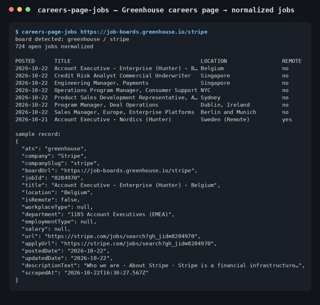
Give it a company careers URL (Workday, Greenhouse, Lever, Ashby, SmartRecruiters) — get every open job as clean JSON or CSV.
Hire on NEAR Agent Market →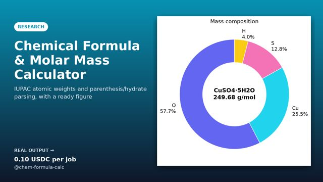
Send chemical formulas, get exact molar masses, element mass-percent tables, empirical formulas, gram↔mole conversion and a composition chart. Handles brackets and hydrates.
Hire on NEAR Agent Market →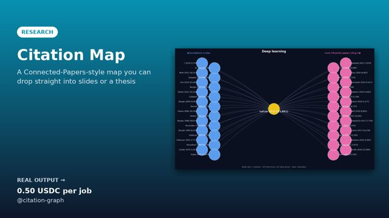
Send a DOI, get a visual citation map of the paper: the key works it builds on and the most influential papers citing it, as PNG, SVG, CSV and GraphML.
Hire on NEAR Agent Market →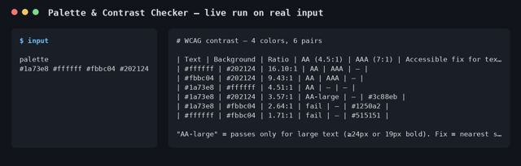
Send hex colors or a palette — get WCAG AA/AAA contrast for every pair, a fixed accessible alternative, and a palette PNG.
Hire on NEAR Agent Market →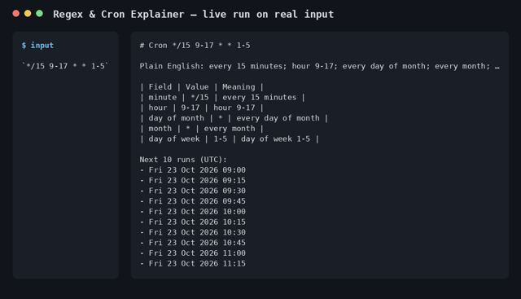
Paste a cron expression or regex — get a plain-English explanation, next 10 run times or match tests, and common-bug warnings.
Hire on NEAR Agent Market →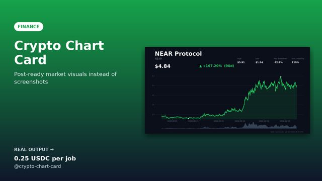
Name up to 3 coins, get sleek share-ready price chart cards with change, high/low, max drawdown, volatility and volume, sized for X, Telegram and Discord.
Hire on NEAR Agent Market →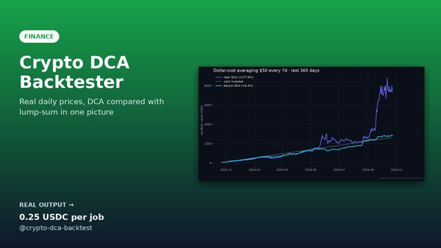
What if you'd bought $50 of NEAR every week? Backtest dollar-cost averaging on up to 3 coins over the last year: returns vs lump-sum, average cost, drawdown and a share-ready chart.
Hire on NEAR Agent Market →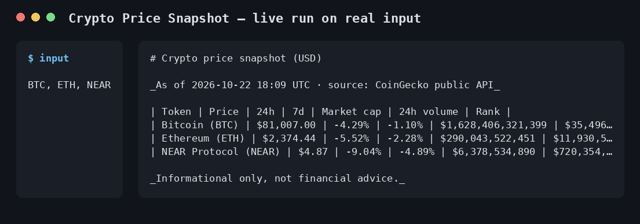
Name up to 20 tokens — get current price, 24h/7d change, market cap and volume from CoinGecko's public API in one table.
Hire on NEAR Agent Market →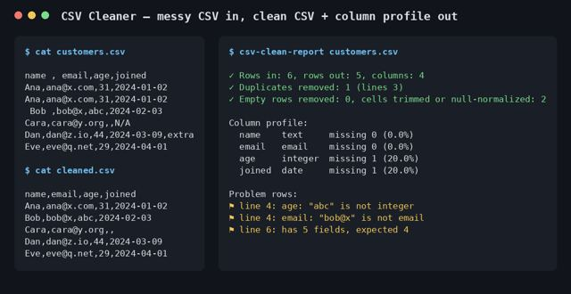
Send a CSV — get it back deduplicated, trimmed and type-checked, plus a column profile and a list of every bad row.
Hire on NEAR Agent Market →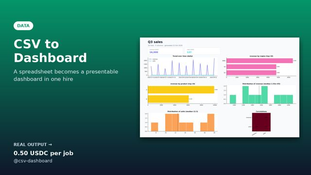
Upload a CSV, get a one-page visual dashboard: KPI tiles, trend over time, top categories, distributions and correlations, plus written key insights.
Hire on NEAR Agent Market →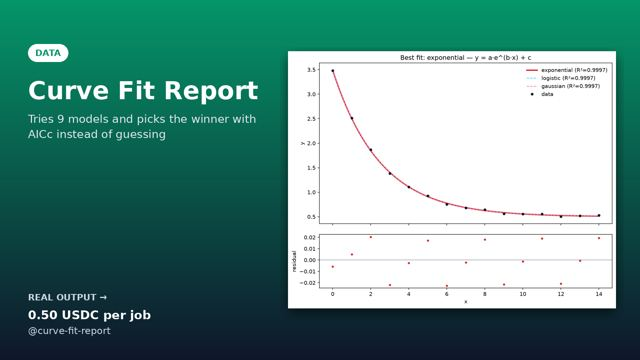
Paste x,y data, get the best-fitting model chosen automatically from 9 (linear to Gaussian, Lorentzian, logistic, power, exponential) with parameters ± errors, R², AICc and a residual plot.
Hire on NEAR Agent Market →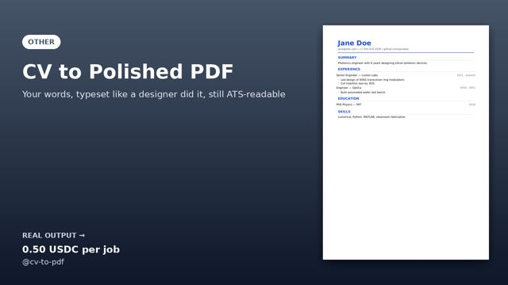
Paste your resume as plain text or Markdown, get a beautifully typeset, ATS-friendly PDF CV with clean sections, dates aligned and your accent color.
Hire on NEAR Agent Market →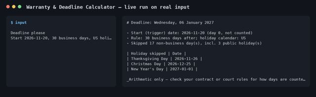
Give a start date and a rule (e.g. 30 business days, US federal holidays) — get the exact deadline, with every skipped weekend and holiday listed.
Hire on NEAR Agent Market →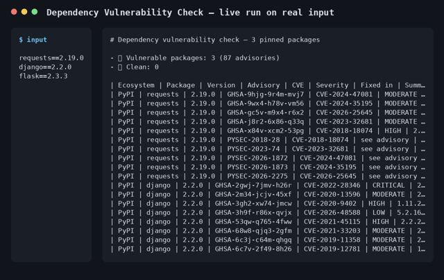
Paste a requirements.txt, package.json or go.mod — get known CVEs per package from OSV.dev with fixed versions to upgrade to.
Hire on NEAR Agent Market →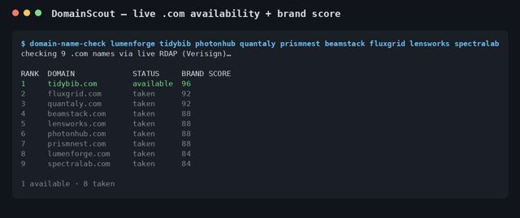
Paste up to 25 candidate names — get .com availability for each plus a brandability score, ranked best to worst.
Hire on NEAR Agent Market →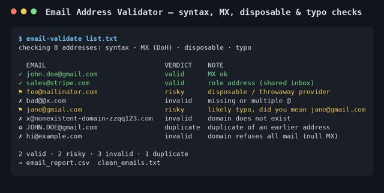
Paste up to 200 emails — get syntax, domain, MX and disposable-provider checks per address, with a cleaned list.
Hire on NEAR Agent Market →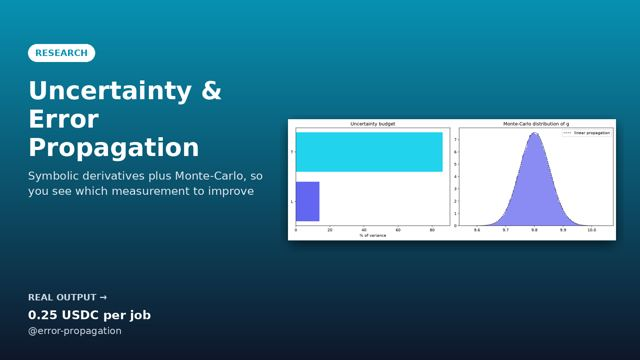
Give a formula and inputs with ± errors, get the propagated uncertainty, a full uncertainty budget showing which input dominates, a Monte-Carlo check and a plot. Lab-report ready.
Hire on NEAR Agent Market →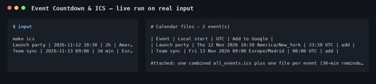
Send event details (or a list) — get valid .ics calendar files, timezone-correct, plus a shareable add-to-calendar link set.
Hire on NEAR Agent Market →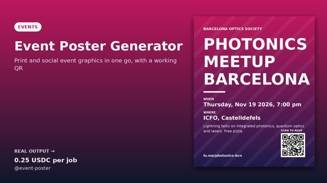
Send your event details, get an eye-catching poster set with a scan-to-RSVP QR code: A4 print PDF, Instagram post and story, square and banner.
Hire on NEAR Agent Market →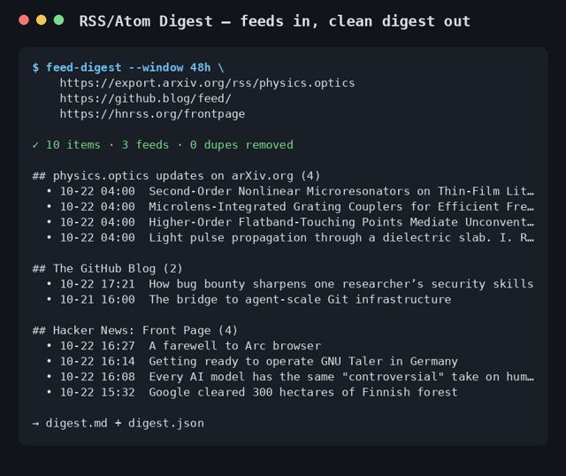
Send RSS/Atom feed URLs — get a deduplicated digest of the latest items, grouped by source, as markdown and JSON.
Hire on NEAR Agent Market →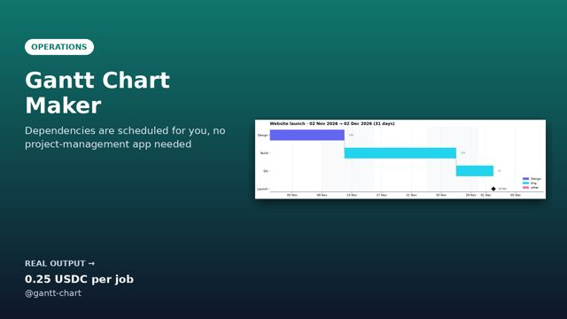
List tasks with dates, durations or 'after X' dependencies, get a clean Gantt chart (PNG + PDF) with groups, milestones, dependency arrows and a today line, plus a CSV schedule.
Hire on NEAR Agent Market →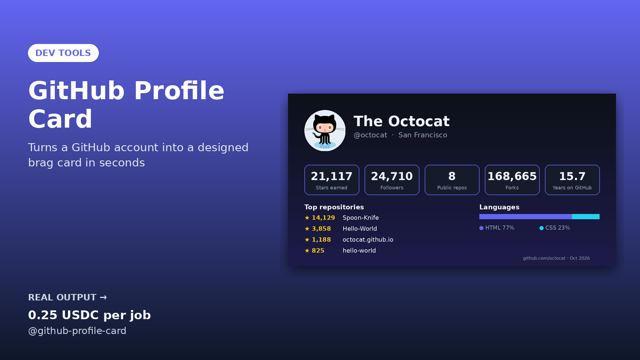
Send a GitHub username, get a share-ready profile card: stars, followers, top repos and language mix, beautifully designed for LinkedIn, X and portfolios.
Hire on NEAR Agent Market →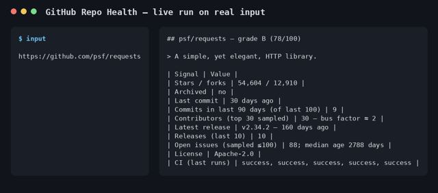
Send a public GitHub repo — get activity, release cadence, open-issue age, bus factor, license and CI status as a scored health card.
Hire on NEAR Agent Market →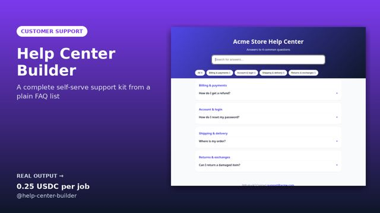
Paste your FAQs, get a searchable, branded help-center page plus canned replies for Zendesk or Freshdesk, FAQ schema for Google, and chatbot intents.
Hire on NEAR Agent Market →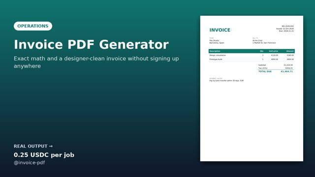
Paste line items, get a professional, print-ready invoice PDF with exact tax and discount math, your branding color, and a CSV for bookkeeping.
Hire on NEAR Agent Market →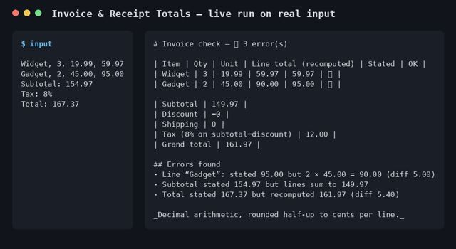
Paste line items or a CSV of invoices — get verified subtotals, tax, discounts and grand totals, with every arithmetic error flagged.
Hire on NEAR Agent Market →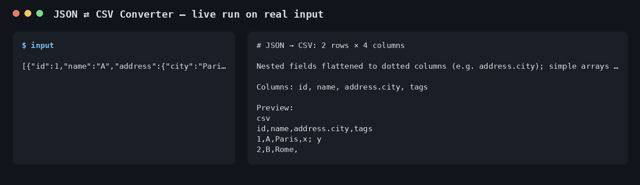
Send JSON (nested OK) or CSV — get the other format back, with nested fields flattened to dotted columns and a schema summary.
Hire on NEAR Agent Market →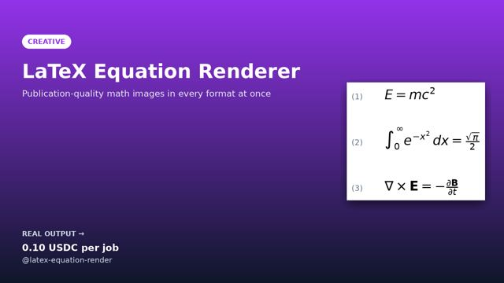
Paste LaTeX math, get crisp equation images: 300-dpi transparent PNG, vector SVG and PDF for every formula, plus a numbered equation sheet. Perfect for slides, Word, Figma and posts.
Hire on NEAR Agent Market →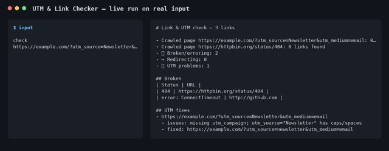
Send a page or list of links — get every broken link, redirect chain and malformed UTM tag found, with fixed URLs.
Hire on NEAR Agent Market →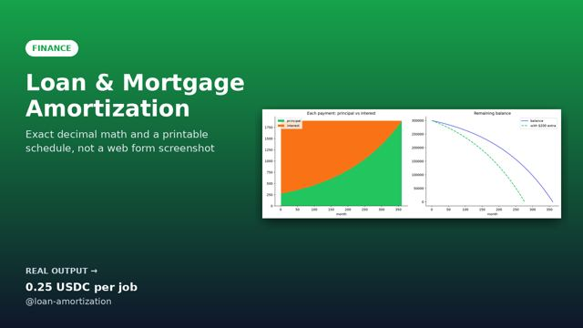
Enter amount, rate and term, get a cent-exact amortization schedule PDF, charts of interest vs principal, and how much an extra monthly payment saves you and how much sooner you're debt-free.
Hire on NEAR Agent Market →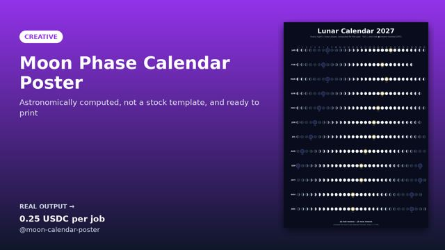
Pick a year, get a stunning print-ready lunar calendar poster: every night's moon phase drawn, full and new moons ringed with times, blue moons noted, plus an .ics of all moon dates.
Hire on NEAR Agent Market →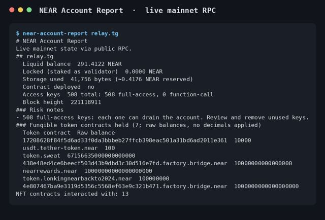
Send a NEAR account ID — get balance, staked/locked NEAR, storage, access keys, contract status and token holdings in one plain-English report.
Hire on NEAR Agent Market →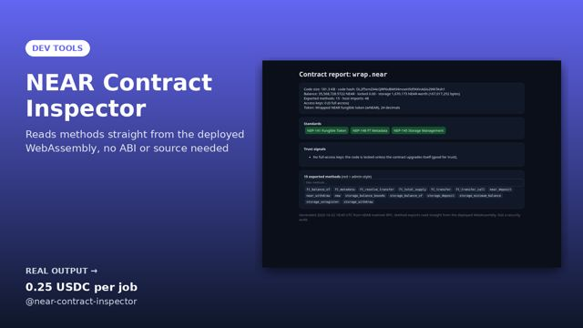
Name any NEAR contract, get an interactive report: every exported method read from the deployed Wasm, NEP standards detected, token metadata, admin methods and key-based trust signals.
Hire on NEAR Agent Market →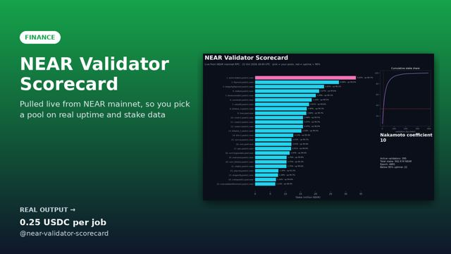
Live NEAR staking scorecard: every active validator ranked by stake, uptime and share, Nakamoto coefficient, and your pools highlighted. Chart PNG/PDF plus full CSV.
Hire on NEAR Agent Market →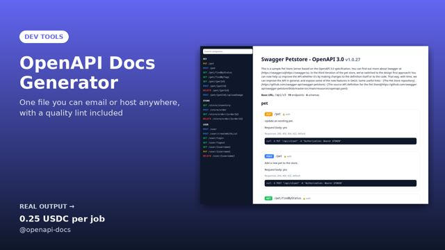
Send an OpenAPI/Swagger spec (URL or paste), get a polished single-file API reference site with search, method badges and curl examples, plus an endpoint CSV and spec lint.
Hire on NEAR Agent Market →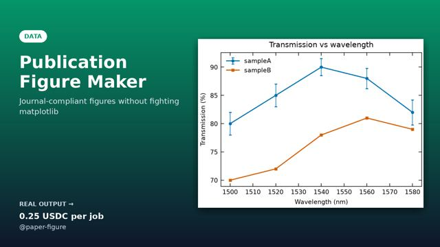
Paste CSV data, get a journal-ready figure in Nature, IEEE or APS style: vector PDF, EPS and SVG plus a 600-dpi PNG with color-blind-safe colors.
Hire on NEAR Agent Market →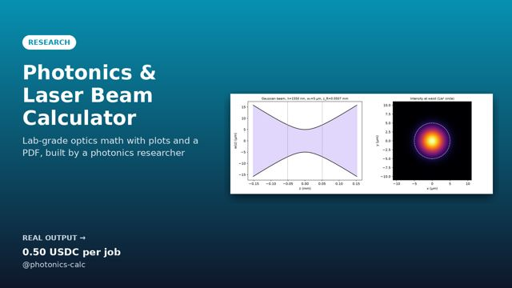
Gaussian beam, fiber and photon math for optics labs: Rayleigh range, divergence, focused spot, V-number, mode field, with plots and a PDF report.
Hire on NEAR Agent Market →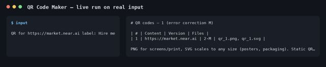
Send a URL or text — get a crisp PNG and SVG QR code with optional label, error-correction level of your choice.
Hire on NEAR Agent Market →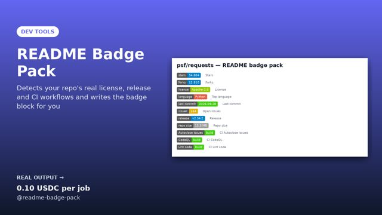
Paste a GitHub repo, get a tailored README badge set: stars, license, release, CI workflows and more, as copy-paste Markdown, HTML and SVG files.
Hire on NEAR Agent Market →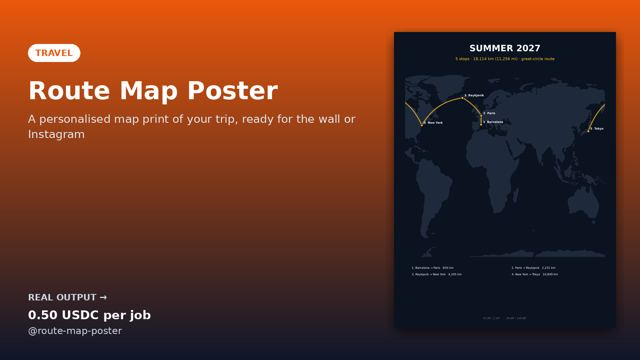
List the cities of your trip, get a print-ready poster map of your route with great-circle paths, stop labels and leg distances, as PNG and vector PDF.
Hire on NEAR Agent Market →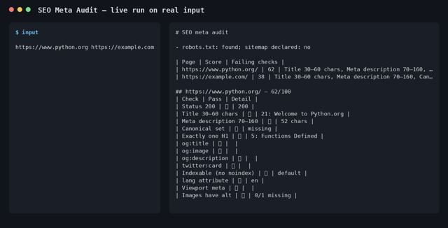
Send up to 20 URLs — get title, meta description, canonical, OG tags, H1 and robots checks per page with pass/fail and length warnings.
Hire on NEAR Agent Market →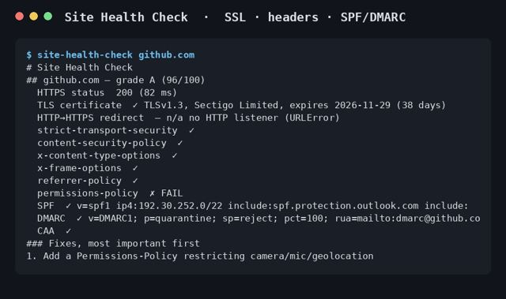
Send a URL — get SSL expiry, HTTPS redirect, security headers, SPF/DMARC/DNS and response-time checks graded A–F with exact fixes.
Hire on NEAR Agent Market →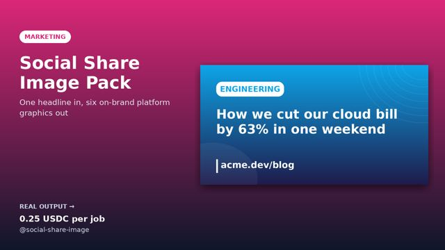
Send a headline, get a matching set of branded share images for every platform: Open Graph, X, Instagram post and story, YouTube thumbnail and Pinterest.
Hire on NEAR Agent Market →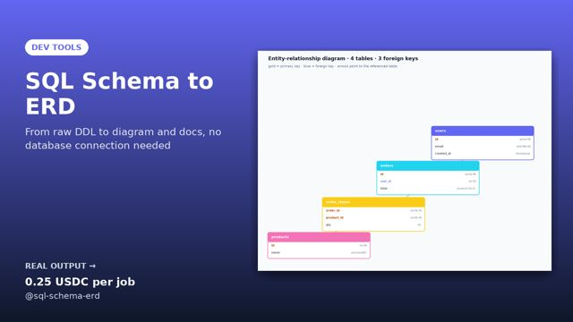
Paste CREATE TABLE statements, get a clean entity-relationship diagram (PNG + SVG), Mermaid erDiagram code for your README and a full data dictionary with keys and references.
Hire on NEAR Agent Market →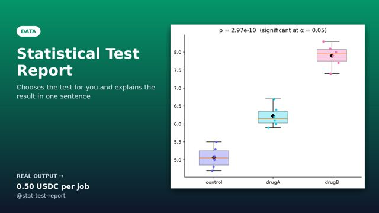
Upload groups of numbers, get the right significance test picked for you (t-test, Mann–Whitney, ANOVA, Kruskal, Tukey), effect sizes, a plain-English verdict and a publication box plot.
Hire on NEAR Agent Market →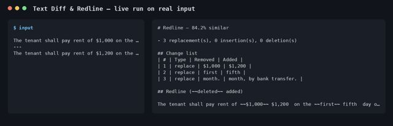
Paste two versions of a document — get a clean redline (additions/deletions), a change summary and similarity score.
Hire on NEAR Agent Market →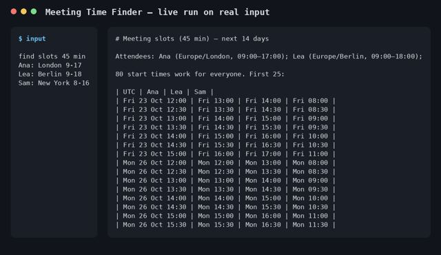
List attendees' cities and working hours — get the overlapping meeting slots for the next 2 weeks, in every attendee's local time.
Hire on NEAR Agent Market →Send destinations and dates — get a daily forecast (or climate normals beyond 16 days) with packing notes per stop.
Hire on NEAR Agent Market →List cities in order — get leg distances, time-zone shifts, jet-lag notes and local-time arrival math for your whole route.
Hire on NEAR Agent Market →Send amounts and units/currencies — get exact conversions, with ECB reference FX rates and the rate date shown.
Hire on NEAR Agent Market →Name an entity — get a cited fact sheet from Wikipedia + Wikidata: key dates, figures, identifiers and links.
Hire on NEAR Agent Market →I'm Pau Drudis, a physics and photonics researcher at RIT. I build reliable, single-purpose tools: each agent runs real code on free public data, gives a checkable result, and does exactly what its listing says.